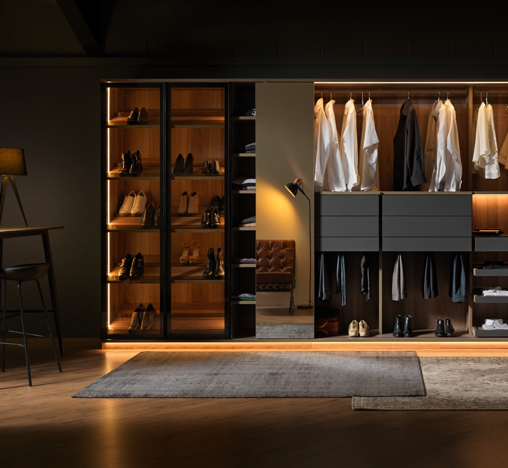
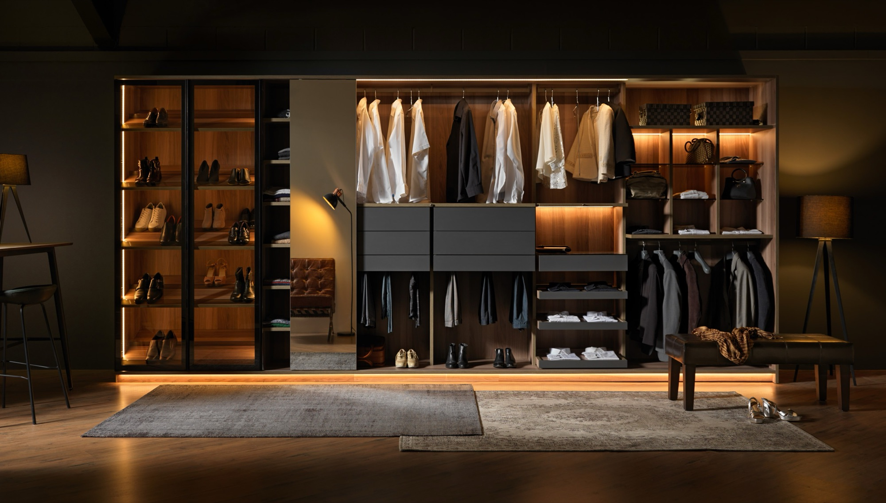
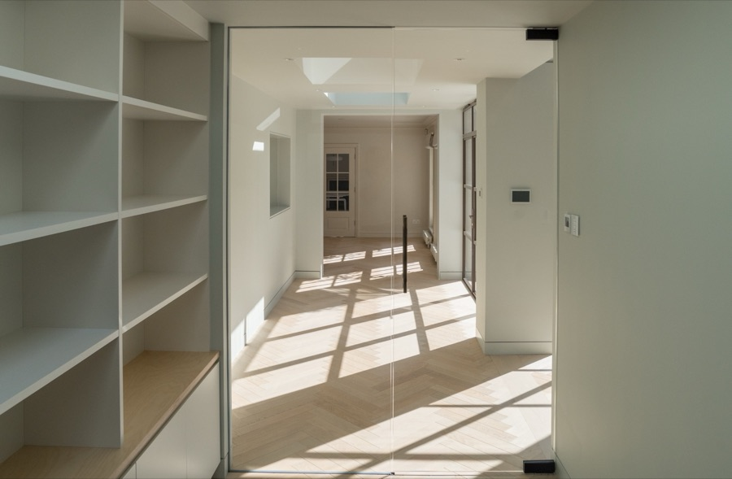
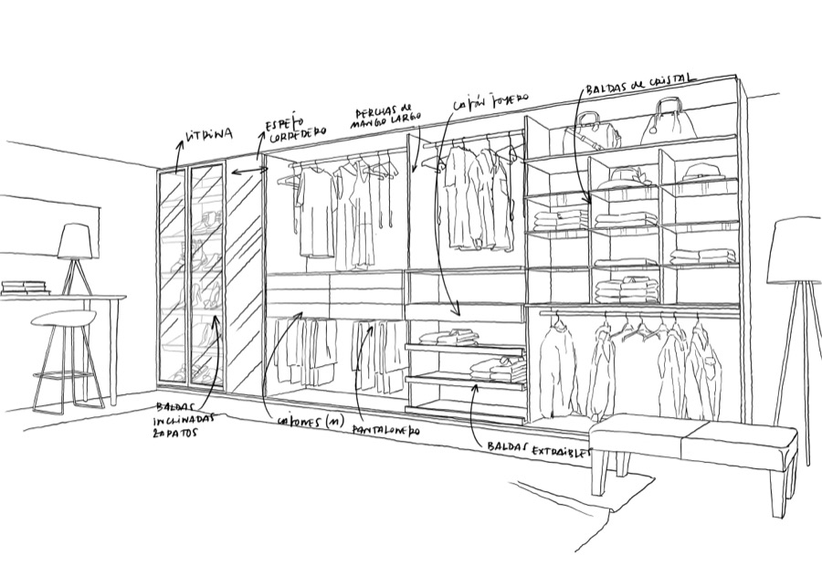
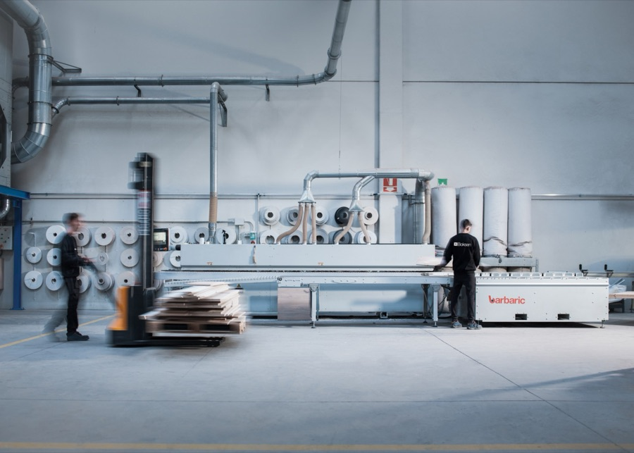
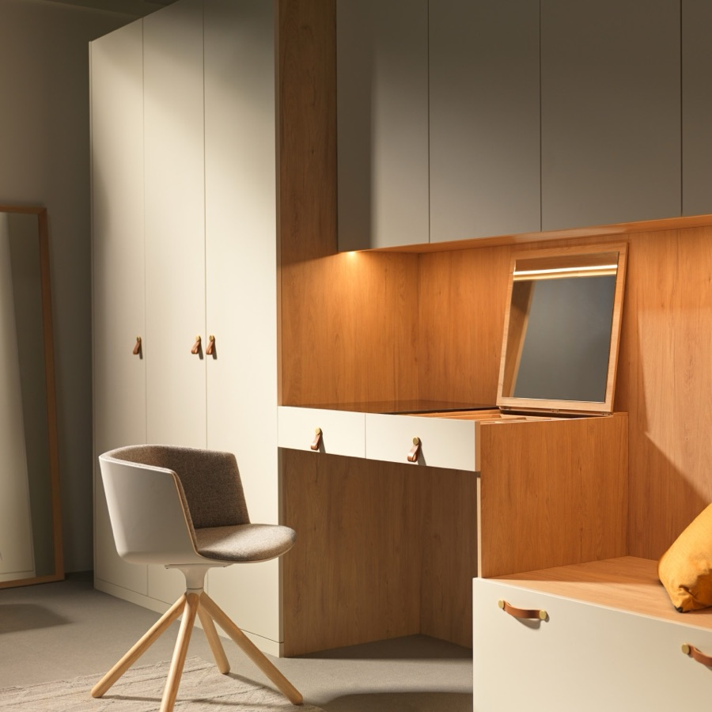
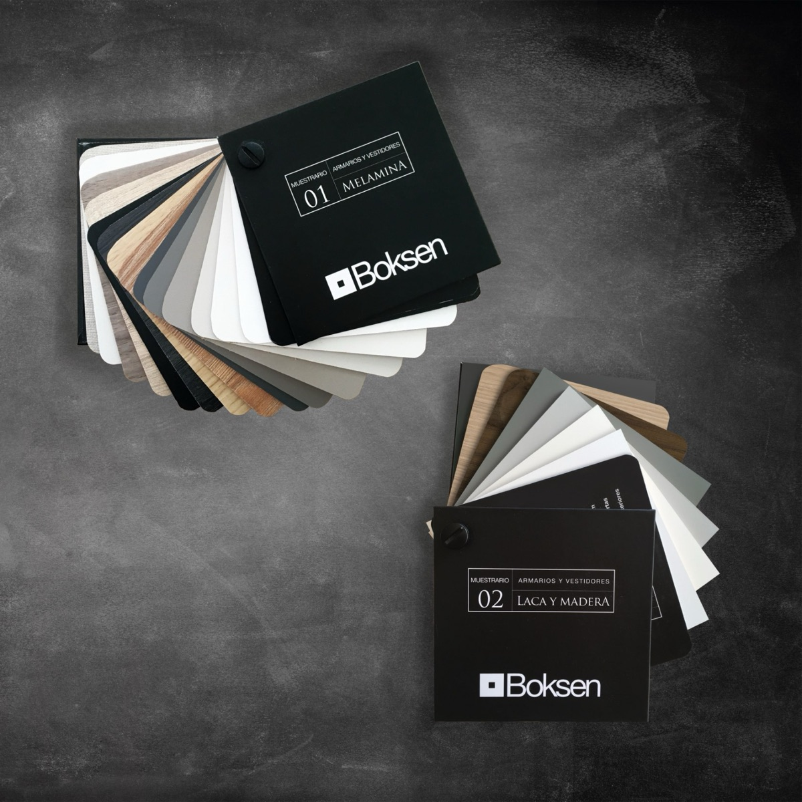

Armarios y vestidores a medida
 Boksen en Bilbao
Boksen en Bilbao
Diseñados, fabricados e instalados a medida
Fabricante español de armarios y vestidores: puertas batientes, correderas y vestidores abiertos.
Armarios y vestidores a medida
Tres maneras
de vestir el espacio
Boksen propone tres familias de producto. Cada una con varios modelos y la posibilidad de equiparla por dentro a medida.
El equipamiento,
pieza a pieza
Para Boksen el armario es un mueble activo. Pulsa los puntos sobre el vestidor y descubre cada accesorio, tal como lo cuenta la marca.

Llave en mano,
de principio a fin
«Medimos, diseñamos, fabricamos y montamos», resume la marca. Un solo interlocutor para todo el proyecto.

Medición
El proceso se inicia en la primera medición.

Diseño
Un diseño a medida para cada necesidad, apoyado en la modularidad de sus sistemas y en el equipamiento interior.

Fabricación
Fabricación propia, a medida en dimensiones y en funcionalidades. Más del 90 % del mobiliario se produce en casa, según la marca.

Montaje
La instalación cierra el proyecto, con el nivel de acabado que la marca se exige.
armarios y vestidores fabricados e instalados cada año, según Boksen.
de la fabricación del mobiliario es propia: producen e inspeccionan casi todo ellos mismos.
Inversión continua en la automatización de la fabricación, para seguir los pedidos y asegurar la entrega puntual.
Una herramienta para que el profesional obtenga rápido un presupuesto de lo proyectado.
Seguimiento online del proyecto para saber en qué fase está cada pedido, en tiempo real.
La marca asegura la entrega puntual de todos sus pedidos, esencial en un proyecto de interiorismo.
Materia y detalle
Una amplia gama de acabados y de tiradores, con distintos modelos cortos y largos y acabados configurables, para combinar con cualquier puerta y cajón.

Laminado madera
Laminado singular
Tiradores
Un armario pensado hasta el último cajón
Pregúntanos por Boksen: te contamos modelos, acabados y equipamiento para tu próximo proyecto de armarios y vestidores a medida.